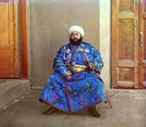
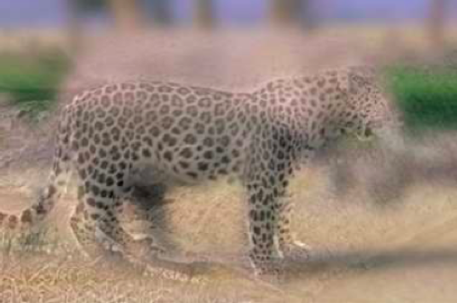
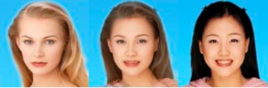
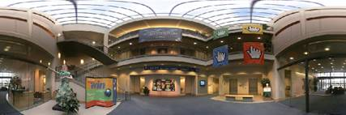
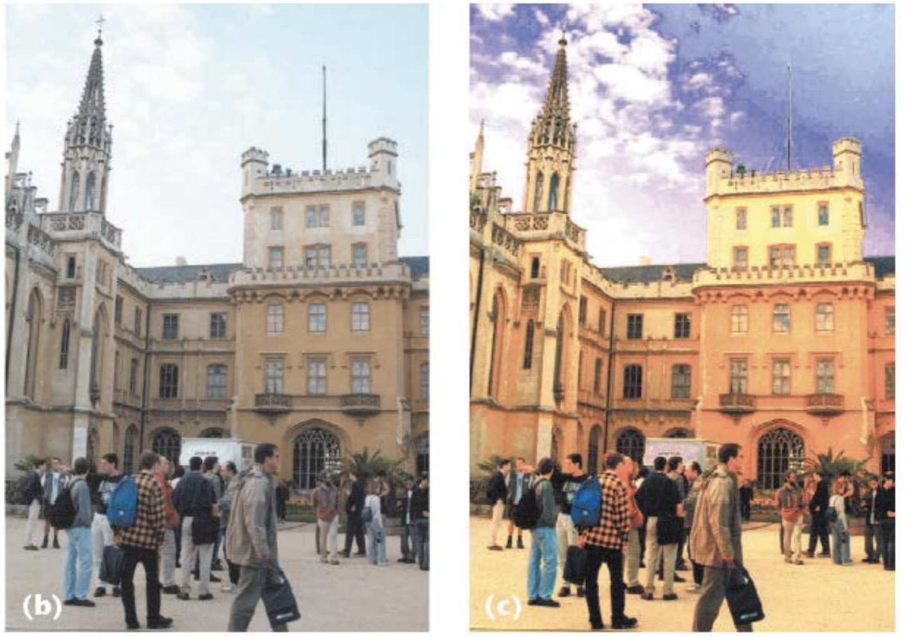
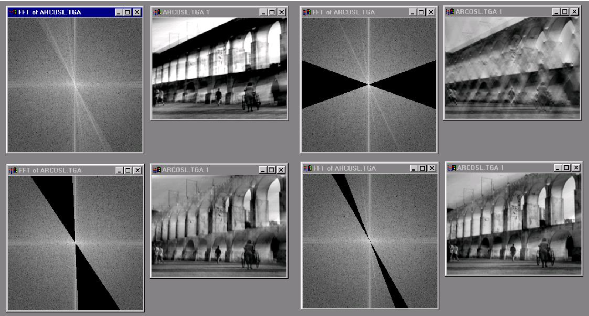
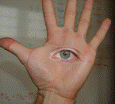
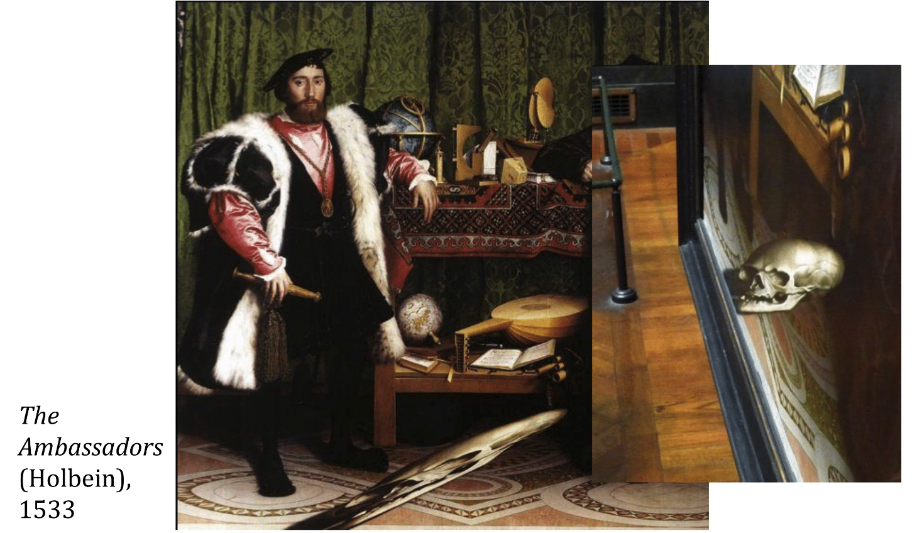
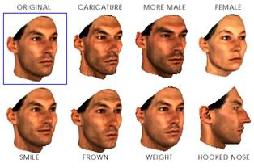
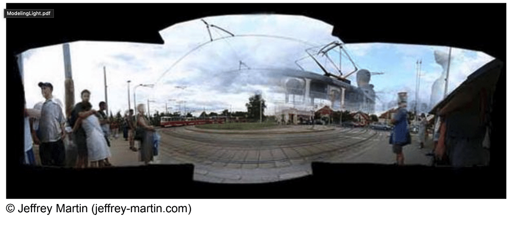

|
|
|
|
|
CS180/280A: Intro to Computer Vision and Computational
Photography |
![Description: [SCS dragon logo]](./463_files/ucbseal_139_540.png)
Instructor:
Alexei (Alyosha) Efros
(Office hours: After Lecture),
GSI:
Hang Gao (DIS: Thur. 10AM - 11AM,
OH: Thur. 2PM - 3PM),
Vongani Maluleke
(DIS: Wed. 11AM - 12PM, OH: Mon. 12PM - 1PM)
Tutors:
Bill Zheng
(OH: Wed. 9AM - 10AM),
Daniel George
(OH: Fri. 6PM - 7PM),
Max Vogel (OH: Fri. 11AM -
12PM), Ryan Tabrizi (OH: Tue.
2PM - 3PM)
Reader:
Xiaowen Yuan
University Units: 4
Semester: Fall 2024
Web Page:
CS180/280A FA24 Web Page
Google Calendar:
CS180/280A FA24 Calendar
Ed:
CS180/280A FA24 Ed
Gradescope Entry Code:
KZNDRJ
Syllabus:
Here
Location: Li Ka Shing 245
Time: MW 5PM-6:30PM
PREREQUISITES:
This is a heavily project-oriented class, therefore good programming
proficiency (at least CS 61B) is absolutely essential and
required. Moreover, working knowledge of linear algebra (MATH 54, MATH 56, MATH 110, or EECS 16A) and multivariate calculus (e.g. MATH 53) are vital.
Experience with machine learning and neural networks is required in
the second part of the course. You must have been taken beforehand or
are currently taking (CS 182 or CS 189). Due to the
open-endedness of this course, creativity is a class requirement.
COURSE DESCRIPTION:
The aim of this advanced undergraduate course is to introduce students
to computing with visual data (images and video). We will cover
acquisition, representation, and manipulation of visual information
from digital photographs (image processing), image analysis and visual
understanding (computer vision), and image synthesis (computational
photography). Key algorithms will be presented, ranging from classical
(e.g. Gaussian and Laplacian Pyramids) to contemporary (e.g. ConvNets,
GANs), with an emphasis on using these techniques to build practical
systems. This hands-on emphasis will be reflected in the programming
assignments, in which students will have the opportunity to acquire
their own images and develop, largely from scratch, the image analysis
and synthesis tools for solving applications.
PROGRAMMING ASSIGNMENTS:
Project 1: Images of the Russian Empire -- Colorizing the
Prokudin-Gorskii Photo Collection

Project 2: Fun with Filters and Frequencies


Project 3: Face Morphing and Modelling a Photo Collection

Project 4: (Auto)stitching and photo mosaics

See the project
submission specification.
TEXTBOOK:
- Foundations of Computer Vision by Torralba, Isola, Freeman
- 2nd edition of Computer Vision textbook by Rick Szeliski
- If you need a refresher of linear algebra, please see Gilbert Strang's online class.
CLASS NOTES
The instructor is extremely grateful to a large number of researchers
for making their slides available for use in this course.
Steve Seitz
and
Rick Szeliski
have been particularly kind in letting me use their wonderful lecture
notes. In addition, I would like to thank
Paul Debevec,
Stephen Palmer, Paul Heckbert,
David Forsyth,
Steve Marschner and
others, as noted in the slides. The instructor gladly gives permission
to use and modify any of the slides for academic and research
purposes. However, please do also acknowledge the original sources
where appropriate.
CLASS SCHEDULE:
| CLASS DATE | TOPICS | MATERIAL |
| Aug 28 |
Introduction |
|
| Sep 04 |
Capturing Light... in man and machine |
|
| Sep 09 |
Image Processing I  |
|
| Sep 11 |
Image Processing II: Convolution and Derivatives |
|
| Sep 16 |
The Frequency Domain  |
|
| Sep 18 |
Pyramid Blending, Templates, NL Filters  |
|
| Sep 23 |
Image Transformations  |
|
| Sep 25 |
Image Warping and Morphing |
|
| Sep 30 |
Data-driven Methods: Faces  |
|
| Oct 07 |
The Camera |
|
| Oct 09 |
Homographies and Mosaics  |
|
CAMERAS:
Although it is not required, students are highly encouraged to obtain
a digital camera for use in the course.
GRADING:
- 60% Programming Projects (5 in total)
- 20% Final Exam (Last Lecture, Wednesday 12/04/24)
- 15% Final Project
- 5% Pop Quizzes
Students will be allotted a total of 5 (five) late days per semester with each additional late day incurring a 10% penalty. Students taking CS280A will also be required to submit a conference-style paper describing their final project. There will be opportunities to complete quiz-drop “cookies” on projects. For every cookie you complete, 1 quiz can be dropped from your average. You can earn up to 2 cookies, and only integer-amount of cookies can be redeemed (no fractions). Students taking CS280A will also be required to submit a conference-style paper describing their final project.
PROGRAMMING RESOURCES:
Students will be encouraged to use either Python (with either
scikit-image or opencv) or MATLAB (with the Image Processing Toolkit)
as their primary computing platform. Specific libraries in both
languages offer tons of built-in image processing functions. Here is a
link to some
useful MATLAB and Python resources
compiled for this class.
PREVIOUS OFFERINGS OF THIS COURSE:
Previous offerings of this course can be found
here.
SIMILAR COURSES IN OTHER UNIVERSITIES:
- Computational Photography (Hoiem, UIUC)
- Computational Photography (Hays, Brown)
- Digital and Computational Photography (Durand, MIT)
- Computer Vision (Seitz & Szeliski, UWashington)
Page design courtesy of Doug James